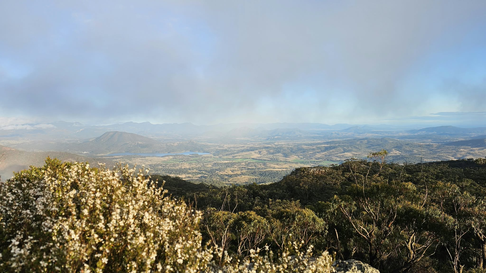
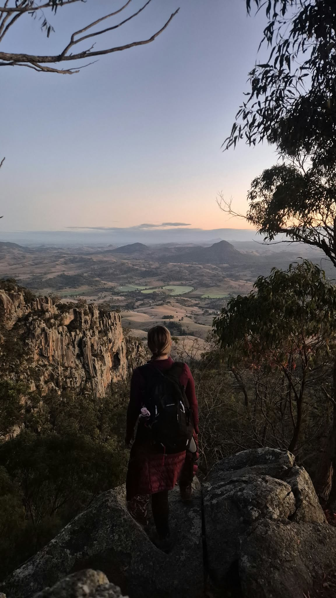
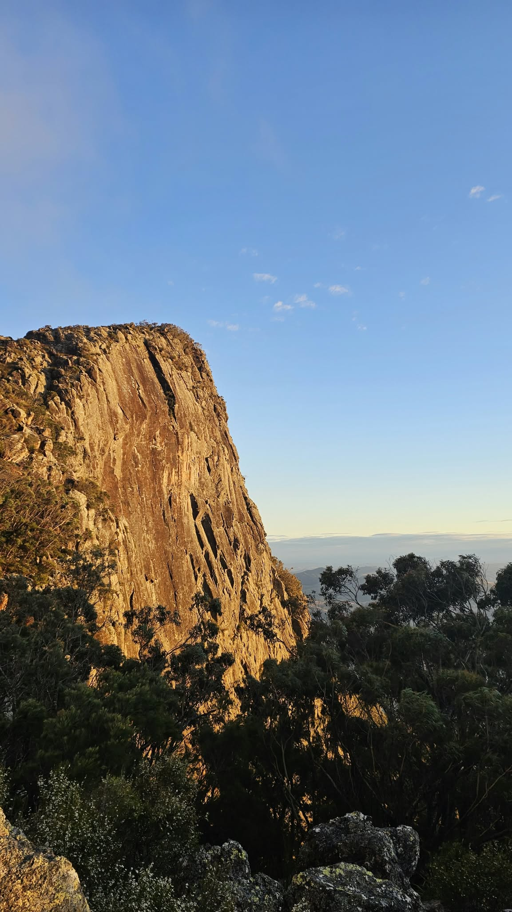
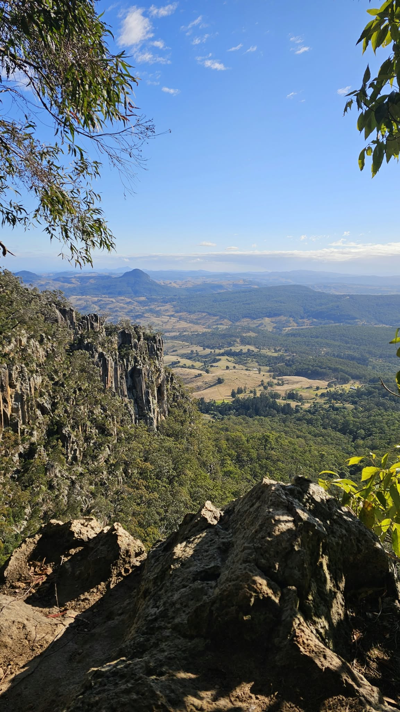
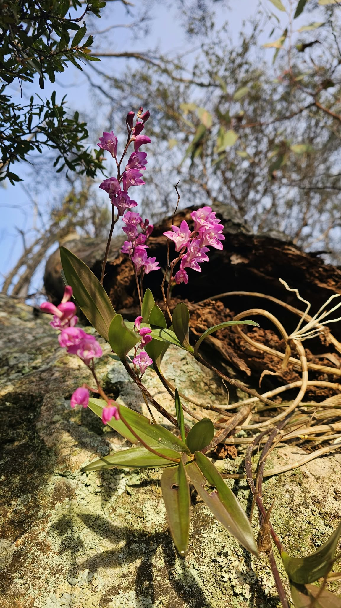
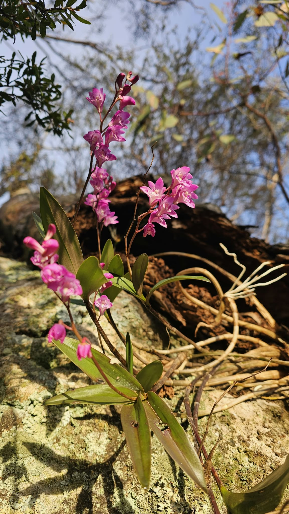
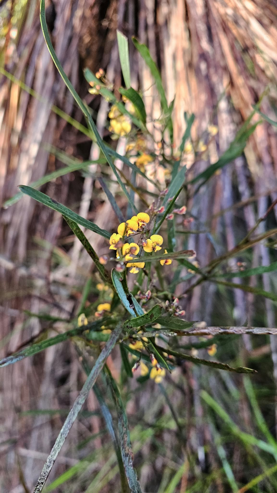
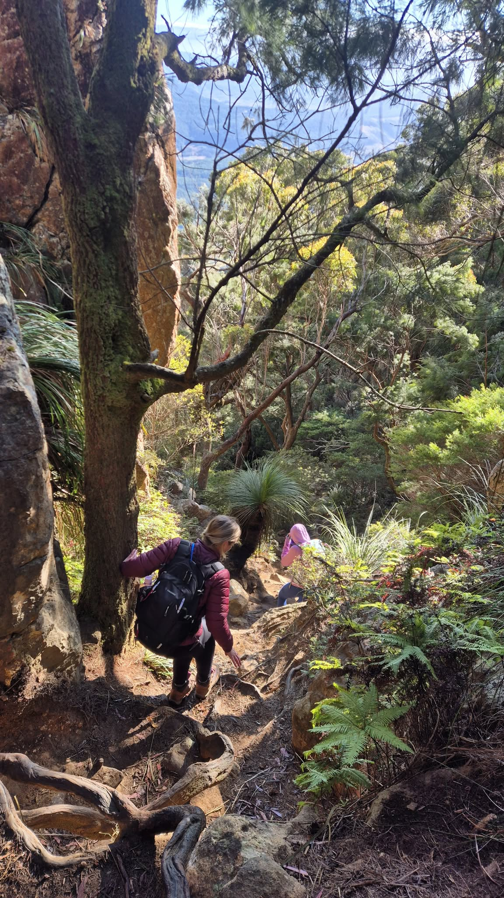
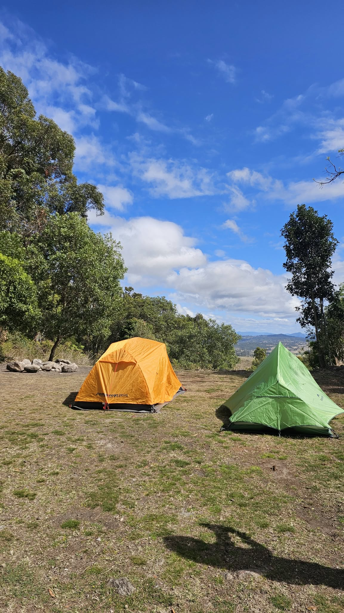
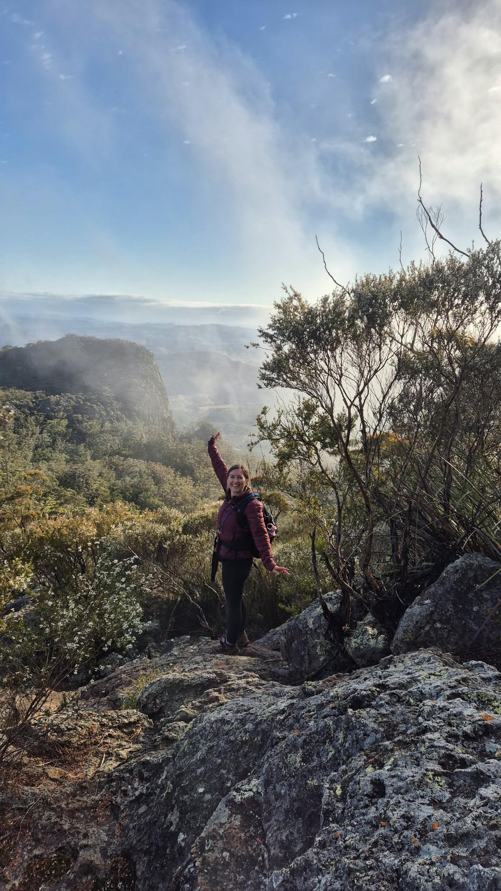

Hiking / Scenic Rim
My first hike up Mount Maroon
Leaving Brisbane at 4:30 pm for a camping and hiking adventure sounded like a great way to finish the working week....joining the bumper-to-bumper traffic was not the most enjoyable start to the adventure.
For the first hour or so my escape to the Scenic Rim involved more brake lights than mountain views. As the traffic thinned, the scenery improved and the working week started to feel a little farther behind me. I was heading down to camp for the night before meeting a friend at Mount Maroon early the next morning.

First priority was setting up camp and then onto dinner. Nothing fancy—just two-minute noodles and an opportunity to try out my new Soto WindMaster stove.
The stove did a great job, although I was probably more excited about the piezo ignition than anything else. Press a button, get a flame. Apparently, I’m very easily impressed when hungry.
We spent the evening stargazing, chatting, laughing and taking photos on our phones. Going to bed proved surprisingly difficult when there was always one more photo to take.
The 4am alarm came around way too quickly but thankfully the morning wasn’t too cold, which made getting started a little easier. Whatever chill there was didn’t last long once we started climbing.
Maroon gets straight to the point. The point is up.
This was my first time up Maroon, I wasn’t entirely sure what was waiting around each corner. There were a few moments of looking ahead, looking at my friend and asking, “We’re going up there?”



Followed by an internal "what the f#$k and I doing?!"
But as we climbed higher, the sun started to rise, and more light filtered through the trees.
The higher up we were the views made me say “wow” out loud without even thinking about it. The sort that interrupts whatever conversation, or perhaps internal negotiation, you’re having at the time.
I loved watching the views open up as we climbed higher. Each stop offered something a little different, and I couldn't stop taking photos, especially of the flowers. There were so many different kinds along the trail that it felt like wandering through a fairy garden.



The summit was a different story. We reached the top only to have the clouds roll around us. It was almost a whiteout and icy winds, with the view completely hidden behind cloud. I’d warmed up nicely on the climb, and the sudden cold was quite contrasting.
We had a laugh about hiking for two hours, putting in all that effort for a close-up look at a cloud. I would have loved a clear view from the summit, but I was still pleased we’d made it. There had already been plenty to enjoy on the way up... as they say it's the journey that matters.
The descent felt a little bit relentless, but it did give us another chance to take in the scenery and see the track from a different angle. Looking back at a few sections, I was quite impressed we’d come up them in the first place.
I finished the hike tired and happy, the right knee may have begged to differ, but with plenty to talk about on the way home. The noodles, the late-night photos, the climb and the freezing summit had all become part of a memorable first trip up Maroon.


